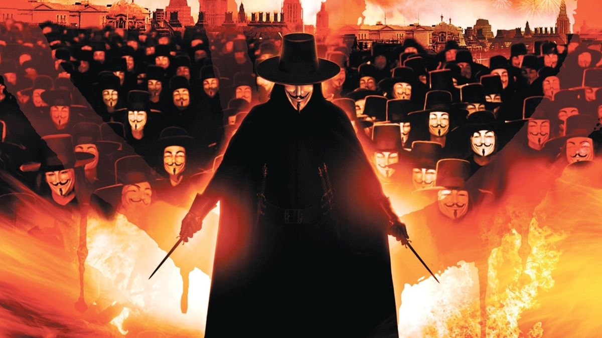

V de Vingança
Sinopse:
Após uma guerra mundial, a Inglaterra é ocupada por um governo fascista e vive sob um regime totalitário. Na luta pela liberdade, um vigilante, conhecido apenas como V, utiliza-se de táticas terroristas para enfrentar os opressores da sociedade. V salva uma jovem chamada Evey da polícia secreta e encontra nela uma nova aliada em busca de liberdade e justiça para o seu país.